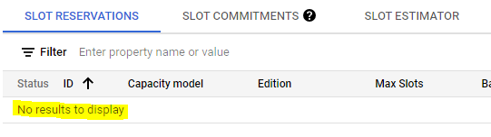
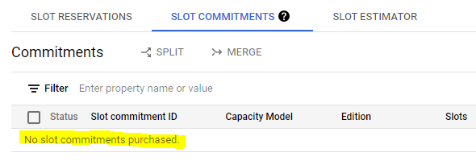

import sys
if "google.colab" in sys.modules:
IS_COLAB = True
from google.colab import auth as google_auth
google_auth.authenticate_user()
else:
! gcloud auth loginOverview
This post is about training a Matrix Factorization model with BigQuery ML and deploying it as Docker container. The end-to-end process is orchestrated through a Vertex AI pipeline.
The post is strongly based on this tutorial: - YouTube: Recommendation Engine Pipeline with BigQuery ML and Vertex AI Pipelines using Matrix Factorization
But there are key differences:
- This post documents the whole process, from loading the date to BigQuery to how to make recomendations in different ways.
- On July 5th there was a Transition to BigQuery editions which resulted in some changes being made to adapt the scripts showed in the video.
This is Important
This is an example of a callout with a title.
- When trying to replicate the video tutorial I had to solve some issues with the pipeline failing to run. Most of the issues were very hard to debug, with misleading error messages and layers over layer of abstraction between python libraries and component definitions. At the end most of the errors were about the Default Service Account not having the requiered permission. So,
- In this post we can see and run each step and command to create a Service Account and grant this account granular permissions to the Google Cloud resources needed for the end to end process to run. This is what the Google documentation recommends.
- There are also the commands to enable each service API needed for the project.
Additional Resources
Before you begin
- Select or create a Google Cloud project.
- Make sure that billing is enabled for your project.
- You can run the code locally or in Colab. If you are locally you need to install the gcloud CLI.
Loading data into BigQuery
Reference: Load the Movielens dataset into BigQuery
Authenticate your Google Cloud account
Set your project ID
PROJECT_ID = "[your-project-id]" # @param {type:"string"}Download MovieLens 1M movier ratings dataset
! curl -O 'http://files.grouplens.org/datasets/movielens/ml-1m.zip'
! unzip -o ml-1m.zipChange :: delimiter to comma , and save as .csv files:
! sed 's/::/,/g' ml-1m/ratings.dat > ratings.csv
! sed 's/::/@/g' ml-1m/movies.dat > movie_titles.csvCreate BigQuery datasets and populate the tables
MODEL_DATASET = "[bq-model-dataset]" # @param {type:"string"}
MOVIELENS_DATASET = "[bq-data-dataset]" # @param {type:"string"}# To store the model
! bq mk --location=US --dataset {PROJECT_ID}:{MODEL_DATASET}
# To store movies and reviews tables
! bq mk --location=US --dataset {PROJECT_ID}:{MOVIELENS_DATASET}Populate the tables
# Reviews table
! bq load --project_id={PROJECT_ID} --source_format=CSV {PROJECT_ID}:{MOVIELENS_DATASET}.movielens_1m ratings.csv user_id:INT64,item_id:INT64,rating:FLOAT64,timestamp:TIMESTAMP
# Movies table
! bq load --project_id={PROJECT_ID} --source_format=CSV --field_delimiter=@ {PROJECT_ID}:{MOVIELENS_DATASET}.movie_titles movie_titles.csv movie_id:INT64,movie_title:STRING,genre:STRINGVertex AI Pipeline. Install Libraries and Setup Services and Accounts
Install Libraries
%%capture
! pip install google-cloud-aiplatform==1.21.0 --upgrade
! pip install kfp==2.0.1 --upgrade
! pip install google-cloud-pipeline-components==2.0.0 --upgradeRestart the Kernel
# Automatically restart kernel after installs so that your environment can access the new packages
import IPython
app = IPython.Application.instance()
app.kernel.do_shutdown(True)Set Project Variables
PROJECT_ID = "[your-project-id]" # @param {type:"string"}
REGION = "us-central1" # @param {type: "string"}
BUCKET_NAME = "[pipeline-bucket]" # @param {type: "string"}
PIPELINE_ROOT = f"gs://{BUCKET_NAME}/"
MODEL_DIR = PIPELINE_ROOT + "recommender_model" # @param {type: "string"}Authenticate your Google Cloud account (again)
Since the kernel was restarted, authenticate again.
import sys
if "google.colab" in sys.modules:
IS_COLAB = True
from google.colab import auth as google_auth
google_auth.authenticate_user()
else:
! gcloud auth login! gcloud config set project {PROJECT_ID}Enable Service APIs
It is great to enabling the APIs with commands because everything stays documented. We need the following services: - Identity and Access Management (IAM) API - Vertex AI API - Cloud Build API - BigQuery API (Although this should be enabled already if the datasets were created and the tables populated) - BigQuery Reservation API - Cloud Run Admin API - Cloud Storage API
! gcloud services enable iam.googleapis.com --project={PROJECT_ID}
! gcloud services enable aiplatform.googleapis.com --project={PROJECT_ID}
! gcloud services enable cloudbuild.googleapis.com --project={PROJECT_ID}
! gcloud services enable bigquery.googleapis.com --project={PROJECT_ID}
! gcloud services enable bigqueryreservation.googleapis.com --project={PROJECT_ID}
! gcloud services enable run.googleapis.com --project={PROJECT_ID}
! gcloud services enable storage-component.googleapis.com --project={PROJECT_ID}Create the Service Account for the pipeline to run
SERVICE_ACCOUNT_ID = "[your-service-account-id]" # @param {type:"string"}If the following cell returns an error in Colab, run it in your local machine. Or create the account directly in the Google Cloud Console UI.
! gcloud iam service-accounts create {SERVICE_ACCOUNT_ID} --description="Vertex AI Pipeline Service Account" --display-name="vertex_service_account"SERVICE_ACCOUNT = f"{SERVICE_ACCOUNT_ID}@{PROJECT_ID}.iam.gserviceaccount.com"If not, use the Default Service Account
shell_output = ! gcloud projects describe {PROJECT_ID}
PROJECT_NUMBER = shell_output[-1].split(":")[1].strip().replace("'", "")
DEFAULT_SERVICE_ACCOUNT = f"{PROJECT_NUMBER}-compute@developer.gserviceaccount.com"import sys
IS_COLAB = "google.colab" in sys.modules
if (
SERVICE_ACCOUNT_ID == ""
or SERVICE_ACCOUNT_ID is None
or SERVICE_ACCOUNT_ID == "[your-service-account-id]"
):
# Get your service account from gcloud
if not IS_COLAB:
shell_output = !gcloud auth list 2>/dev/null
DEFAULT_SERVICE_ACCOUNT = shell_output[2].replace("*", "").strip()
if IS_COLAB:
shell_output = ! gcloud projects describe {PROJECT_ID}
PROJECT_NUMBER = shell_output[-1].split(":")[1].strip().replace("'", "")
DEFAULT_SERVICE_ACCOUNT = f"{PROJECT_NUMBER}-compute@developer.gserviceaccount.com"
print("Service Account:", DEFAULT_SERVICE_ACCOUNT)
SERVICE_ACCOUNT = DEFAULT_SERVICE_ACCOUNTGrant the Service Account granular permissions to GCP resources
The most challenging part of the project was figuring out how to give the service account the right granular permissions. I didn’t want to give the service account the Editor or Owner rol. It took me a while to find the right roles. As I mentioned some errors in the pipeline were because lack of permissions, but it was hard to troubleshoot as there wasn’t any mention to the actual rol needed.
aiplatform.user rol
service_arg = f"serviceAccount:{SERVICE_ACCOUNT}"
! gcloud projects add-iam-policy-binding {PROJECT_ID} --member={service_arg} --role="roles/aiplatform.user"Create the GCS bucket and assign storage.objectAdmin rol
I first assign the rols of storage.objectCreator and objectViewer. Took me hours to find out that the trained model couldn’t be exported without the rol of storage.objectAdmin which is needed to modify existing data in the bucket.
! gsutil mb -p {PROJECT_ID} -l {REGION} {PIPELINE_ROOT}
! gsutil iam ch serviceAccount:{SERVICE_ACCOUNT}:roles/storage.objectAdmin {PIPELINE_ROOT}Cloud Run’s run.developer rol
! gcloud projects add-iam-policy-binding {PROJECT_ID} --member={service_arg} --role="roles/run.developer"Cloud Build’s cloudbuild.builds.editor rol
I thought that Cloud Run developer rol was enough for the model to be deployed. Took me a while to find out the service account needed a permission from Cloud Build service.
! gcloud projects add-iam-policy-binding {PROJECT_ID} --member={service_arg} --role="roles/cloudbuild.builds.editor"Assign roles to Cloud Build’s service account
When Cloud Build’s API is enabled, its service account is automatically created.
By default – for security reasons – the Cloud Build Service Account does not have the permissions to manage Cloud Run. Google Cloud Build + Google Cloud Run
First lets grab the default service accounts.
# Cloud Build default service account
cloud_build_sa = f"{PROJECT_NUMBER}@cloudbuild.gserviceaccount.com"
service_build_arg = f"serviceAccount:{cloud_build_sa}"
# Compute Engine default service account
compute_engine_sa = f"{PROJECT_NUMBER}-compute@developer.gserviceaccount.com"! gcloud projects add-iam-policy-binding {PROJECT_ID} --member={service_build_arg} --role="roles/run.admin"And the last part is “Grant the IAM Service Account User role to the Cloud Build service account on the Cloud Run runtime service account”.
Meaning that the Cloud Build service account is going to be able to impersonate the Cloud Run runtime service account, which is Compute Engine default service account. More on impersonation here: Youtube: Service Account Impersonation in Google Cloud - IAM in GCP
! gcloud iam service-accounts add-iam-policy-binding {compute_engine_sa} --member={service_build_arg} --role="roles/iam.serviceAccountUser"And thats it, all services are enabled and the service accounts has the granular permission for the pipeline to run.
Vertex AI Pipeline - Create and Run the Pipeline
Import Libraries
import kfp
from typing import NamedTuple
from kfp.dsl import (
pipeline, component, OutputPath, InputPath, Model,
Input, Artifact, Output, Metrics
)
from kfp import compiler
from google.cloud import aiplatform
from google.cloud.aiplatform import pipeline_jobsInitialize Vertex AI SDK for Python
aiplatform.init(project=PROJECT_ID, location=REGION)Declare Pipeline Components
Create Reservation Component
@component(packages_to_install=["google-cloud-bigquery-reservation==1.11.2"])
def create_reservation(
project: str,
location: str,
commitment_slots: int,
reservation_id: str
) -> NamedTuple("outputs", [("reservation_name", str), ("assignment_name", str)]):
"""
Create BigQuery Reservation and Assignment
"""
print('project', project, 'location', location, 'commitment_slots', commitment_slots, 'reservation_id', reservation_id)
# import libraries
import time
from google.cloud.bigquery_reservation_v1 import (
CapacityCommitment, Reservation, Assignment, ReservationServiceClient
)
reservation_client = ReservationServiceClient()
parent_arg = f"projects/{project}/locations/{location}"
# Reservation (autoscaling)
autosc = Reservation.Autoscale(current_slots=0, max_slots=commitment_slots) # NEW Jul-05 Update
#reservation_slots = commitment_slots
slot_capacity = 0
reservation_config = Reservation(
#slot_capacity=reservation_slots,
slot_capacity=slot_capacity, autoscale=autosc, # NEW Jul-05 Update
edition='ENTERPRISE', # NEW Jul-05 Update (Could be "STANDARD" ?)
ignore_idle_slots=False
)
reservation = reservation_client.create_reservation(
parent=parent_arg, reservation_id=reservation_id, reservation=reservation_config
)
reservation_name = reservation.name
print('reservation_name', reservation_name)
# Assignment
print("Creating Assignment...")
assignment_config = Assignment(
job_type='QUERY', assignee='projects/{}'.format(project)
)
assignment = reservation_client.create_assignment(
parent=reservation_name, assignment=assignment_config
)
assignment_name = assignment.name
print('assignment_name', assignment_name)
# it can take a lot for the slots to be available
print("Waiting for 300 seconds...")
time.sleep(300)
return reservation_name, assignment_name
This is Important
After the reservation is created, the account is going to be billed by time and number of slots. It can cost about $3 for each pipeline run, but you need to be very cautious about the pipeline failing before the reservation is deleted. To be sure the reservation is deleted you can go to https://console.cloud.google.com/bigquery/admin/reservations and select the project of interest. Check that SLOT RESERVATIONS and SLOT COMMITMENTS are empty and look like this:
SLOT RESERVATIONS 
SLOT COMMITMENTS 
Delete Reservation Component
@component(packages_to_install=["google-cloud-bigquery-reservation==1.11.2"]) # NEW Jul-05 Update
def delete_reservation(
# commitment_name: str, # NEW Jul-05 Update
reservation_name: str,
assignment_name: str
):
# import libraries
from google.cloud.bigquery_reservation_v1 import ReservationServiceClient
# Delete Assignment, Reservation and Capacity
reservation_client = ReservationServiceClient()
reservation_client.delete_assignment(name=assignment_name)
reservation_client.delete_reservation(name=reservation_name)
print('reservation_name', reservation_name, 'deleted')
print('assignment_name', assignment_name, 'deleted')Log Eval Metrics
@component()
def log_eval_metrics(
eval_metrics: Input[Artifact], metrics: Output[Metrics]
) -> dict:
# import libraries
import math
metadata = eval_metrics.metadata
for r in metadata["rows"]:
rows = r["f"]
schema = metadata["schema"]["fields"]
output = {}
for metric, value in zip(schema, rows):
metric_name = metric["name"]
val = float(value["v"])
output[metric_name] = val
metrics.log_metric(metric_name, val)
print(output)